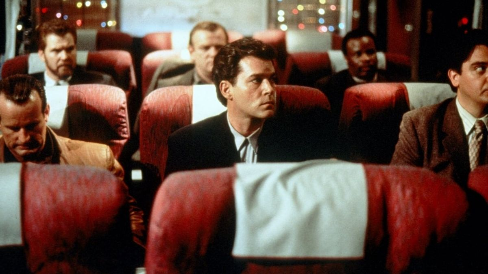
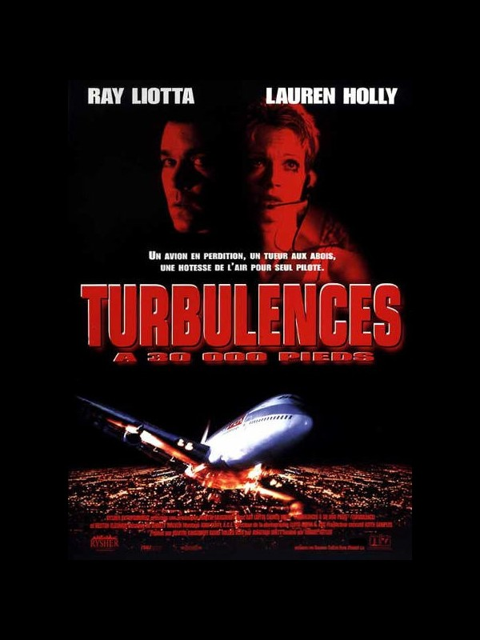
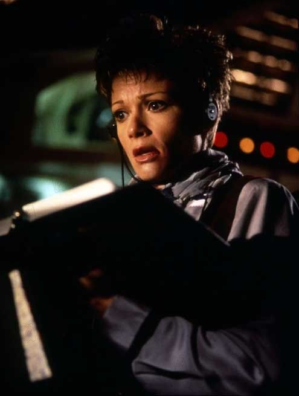

Celui-là, c'est une critique en ligne qui me l'a mis sous les yeux, il n'y a pas si longtemps.
Un genre que j'apprécie particulièrement — le thriller enfermé dans un avion. Après Passager 57 et Executive Decision, difficile de résister à un troisième volet.
Sur le papier, la promesse était simple : Ray Liotta en psychopathe déchaîné, face à une hôtesse de l'air qui n'a pas l'intention de se laisser faire. Ça suffisait à piquer ma curiosité.
Je m'attendais à un thriller correct, dans la lignée de ce qu'on avait déjà vu cette saison.
J'ai été agréablement surpris. Ce n'est pas juste correct. C'est un excellent thriller.
Ce soir, dernier vol de la saison.

Turbulences à 30 000 pieds — affiche française, 1997
Turbulence.
1997. Réalisé par Robert Butler. Avec Ray Liotta, Lauren Holly et Brendan Gleeson.
Produit par MGM, le film clôt en beauté le mini-fil "Panique à bord" de cette saison — après l'avion détourné de Passager 57 et l'infiltration militaire d'Executive Decision, place à la menace la plus intime des trois : un seul homme, dangereusement instable, au milieu des passagers.
Ray Liotta y incarne un tueur en série évadé, escorté à bord d'un vol de nuit presque vide entre New York et Los Angeles. Quand il reprend le contrôle de la situation, c'est une hôtesse de l'air — Lauren Holly — qui se retrouve seule à devoir le contenir, puis à devoir littéralement piloter l'appareil.
Turbulence ne mise pas sur l'ampleur du spectacle.
Il mise sur la tension d'un huis clos resserré, porté par un antagoniste habité et une héroïne qui refuse de rester une victime.
1997.
Le sous-genre du thriller aérien, lancé par Passager 57 en 1992 et solidifié par Executive Decision l'année précédente, continue de prouver sa rentabilité. MGM veut sa propre variation — plus resserrée, plus psychologique, avec un antagoniste unique plutôt qu'un groupe organisé.
Robert Butler, réalisateur vétéran venu de la télévision — Hill Street Blues, Star Trek à ses débuts — apporte un sens du rythme habitué aux formats contraints. Le scénario, signé Jonathan Brancato et Brian Sandler, mise tout sur le face-à-face plutôt que sur la complexité du complot.
Ray Liotta, révélé par Les Affranchis en 1990, cherche à cette période des rôles qui exploitent sa capacité à basculer instantanément du charme à la menace pure. Ryan Weaver lui offre un terrain de jeu total — un psychopathe manipulateur, imprévisible, jamais tout à fait lisible.
Face à lui, Lauren Holly, alors connue pour Dumb and Dumber et la série NCIS naissante, incarne une hôtesse de l'air qui ne se contente jamais du rôle de victime. Le film construit patiemment sa transformation en héroïne pleinement active.
Le tournage recrée l'intérieur d'un Boeing 747 en studio, permettant à l'équipe de filmer les séquences de tension dans un espace exigu mais entièrement maîtrisé.
Sorti en janvier 1997, Turbulence devient un succès commercial solide pour un budget modeste, porté notamment par la performance de Ray Liotta.

Ray Liotta — Turbulence, 1997
Un vol de nuit presque vide entre New York et Los Angeles, la veille de Noël.
À son bord, quelques passagers ordinaires, un équipage réduit — et deux prisonniers en transfert, escortés par des agents fédéraux. L'un d'eux, Ryan Weaver, est un tueur en série condamné à mort, connu pour manipuler ceux qui l'entourent avec un charme trompeur.
Ce qui devait être un simple transfert de routine dérape rapidement. Weaver reprend le contrôle de la situation, éliminant un à un ceux qui se dressent sur son chemin — jusqu'à ce qu'il ne reste, face à lui, qu'une poignée de survivants terrifiés.
Teri Halloran, hôtesse de l'air, se retrouve alors seule à devoir gérer l'ingérable — contenir un psychopathe imprévisible, protéger les rares passagers encore en vie, et faire face à un problème bien plus vertigineux encore : l'avion doit atterrir, et personne aux commandes n'est plus en état de le faire.
Ce qui commence comme une prise d'otages devient une lutte de tous les instants, à 10 000 mètres d'altitude, sans aucune échappatoire possible.
Turbulence fonctionne parce qu'il resserre l'échelle de la menace là où ses prédécesseurs l'avaient élargie.
Passager 57 opposait un homme à une organisation. Executive Decision opposait une équipe à un complot terroriste sophistiqué. Turbulence retire toute cette architecture et ne garde qu'un face-à-face brut — un homme et une femme, dans un espace clos, sans plan d'ensemble, sans renfort extérieur possible. Cette simplification n'est pas un manque d'ambition. C'est un choix qui recentre toute la tension sur la psychologie des deux personnages principaux.
Ray Liotta y est absolument redoutable. Ryan Weaver n'est jamais un simple monstre — c'est un manipulateur qui alterne charme, humour noir et violence soudaine avec une fluidité qui rend chaque scène imprévisible. Liotta comprend que la vraie terreur ne vient pas de la force brute, mais de l'incapacité à jamais savoir ce qui va suivre.
Face à lui, Lauren Holly construit une progression crédible. Teri Halloran ne devient jamais une héroïne d'action instantanée — sa transformation se fait par nécessité, par épuisement des alternatives, ce qui rend chaque décision qu'elle prend d'autant plus tendue.
Le film exploite intelligemment son décor unique. Chaque recoin de l'avion — cabine, soute, cockpit — devient un terrain d'affrontement différent, et Robert Butler varie suffisamment les configurations pour que le huis clos ne s'essouffle jamais.
Turbulence n'invente rien du genre. Il en applique la formule avec une précision et une intensité qui dépassent largement ce qu'on attendrait d'un thriller aérien de milieu de gamme.

Teri Halloran (Lauren Holly), seule face à la menace
Turbulence souffre d'un problème de timing cruel dans l'histoire du sous-genre qu'il conclut.
Sorti en janvier 1997, après Passager 57 en 1992 et Executive Decision en 1996, le film arrive à un moment où le public commence à ressentir une forme de lassitude face à la formule du thriller aérien. Trois films sur un concept similaire en cinq ans, ça commence à ressembler à une redite plutôt qu'à une nouvelle proposition — même quand l'exécution, comme ici, est solide.
La critique de l'époque a été particulièrement sévère, reprochant au film sa simplicité et son manque d'ambition narrative comparé à ses prédécesseurs plus complexes. Un jugement qui, avec le recul, ignore complètement ce que cette simplicité apporte réellement au film — une tension plus directe, plus psychologique, moins diluée par des sous-intrigues.
Ray Liotta, malgré une performance remarquée, reste associé prioritairement aux Affranchis dans la mémoire collective — ses autres rôles, même solides, peinent à exister à côté de cette référence écrasante.
Et le film clôturant un mini-fil déjà bien identifié comme "le troisième avion", il hérite d'une forme de désintérêt automatique — comme si tout ce qu'il y avait à dire sur le genre avait déjà été dit deux fois avant lui.
Un thriller efficace, sorti au moment où plus personne n'attendait vraiment un troisième volet.
Parce que Ray Liotta y livre l'une de ses performances de vilain les plus abouties, dans un registre différent de ce qu'on associe habituellement à sa carrière.
Parce que le film assume pleinement son minimalisme — pas de complot international, pas d'équipe militaire, juste deux personnes et un espace clos — et prouve qu'un thriller n'a pas besoin d'ampleur pour être efficace, seulement d'une tension bien construite.
Et parce que Lauren Holly, trop souvent réduite à ses rôles comiques du début des années 90, mérite d'être vue dans ce registre plus dramatique et physique, où elle porte le film à parts égales avec Liotta.
Dernier vol du mini-fil "Panique à bord" de cette saison — celui qui referme la trilogie sur la note la plus resserrée et la plus tendue des trois.
Turbulence n'a jamais eu l'ambition de réinventer le genre qu'il clôturait.
Il avait quelque chose de plus simple à prouver — qu'un huis clos resserré, porté par deux acteurs qui se donnent tout entiers à leur affrontement, tient toujours la route quand tout le reste est mis de côté.
Trois avions cette saison. Un consultant en sécurité aérienne piégé dans une prise d'otages, une équipe militaire qui déjoue un complot, une hôtesse seule face à un homme qui ne s'arrête jamais.
La cassette est dans le lecteur. On rembobine.
Titre original
Turbulence
Pays
États-Unis
Genre
Thriller
Durée
103 min
Producteur
MGM
Avec aussi
Brendan Gleeson · Rachel Ticotin
Fil conducteur
Panique à bord (3/3)
Note
Découvert récemment via une critique en ligne
SOMEDAY — S2 EP. 12